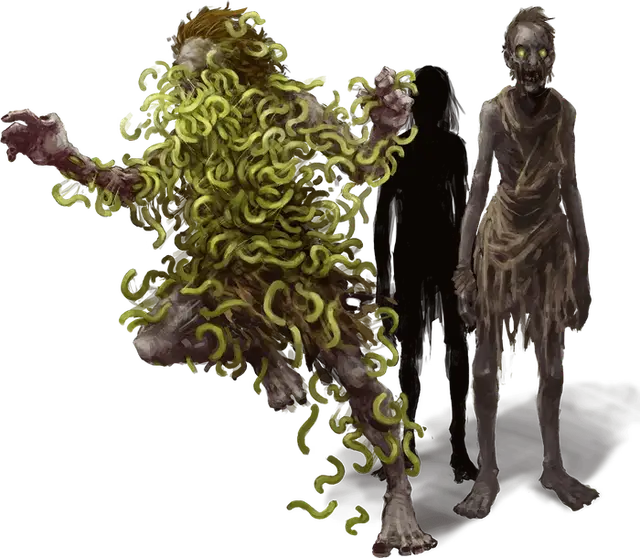

Отродье Кьюсса
Spawn of Kyuss
Средняя Нежить, обычно хаотично-злая

Класс Доспеха 10
Хиты 76 (9к8 + 36)
Скорость 30 футов
| мод | спас | ||
|---|---|---|---|
| СИЛ | 16 | +3 | +3 |
| ЛОВ | 11 | +0 | +0 |
| ТЕЛ | 18 | +4 | +4 |
| мод | спас | ||
|---|---|---|---|
| ИНТ | 5 | −3 | −3 |
| МДР | 7 | −2 | +1 |
| ХАР | 3 | −4 | −4 |
Иммунитет к урону яд
Иммунитет к состояниям отравление, истощение
Чувства тёмное зрение 60 футов, пассивное Восприятие 8
Языки понимает языки, которые знал при жизни, но не говорит
Опасность 5 (1800 опыта)
Бонус мастерства +3
Среда обитания Подземье, Арктика
Особенности
Регенерация. Отродье Кьюсса восстанавливает 10 хитов в начале своего хода, если у него есть по крайней мере 1 хит и он не находится на солнечном свете или в текущей воде. Если отродье получает урон кислотой, огнём или излучением, то эта особенность не работает в начале следующего хода отродья. Отродье уничтожается только если начинает ход с 0 хитов и не может регенерировать.
Черви. Если отродье Кьюсса выбрано целью эффекта, который излечивает болезни или снимает проклятье, то все населяющие его черви умирают и он теряет своё действие Роющий червь.
Необычная природа. Отродье Кьюсса не нуждается в воздухе, пище, питье и сне.
Действия
Мультиатака. Отродье Кьюсса совершает две атаки Когтями и использует действие Роющий червь.
Когти. . Рукопашная атака оружием: +6 к попаданию, досягаемость 5 футов, одна цель. Попадание: 6 (1к6+ 3) рубящего урона плюс 7 (2к6) урона некротической энергией.
Роющий червь. . Из отродья Кьюсса запускается червь в одного гуманоида, которого отродье может видеть в пределах 10 футах от себя. Червь цепляется за кожу цели, если только цель не преуспеет в спасброске Ловкости Сл 11.
Червь является Крошечной нежитью с КД 6, 1 хитом, 2 (–4) в каждой характеристики и скоростью 1 фут. На коже цели червя можно убить обычным способом или действием сорвать его (отродье может использовать это действие Роющий червь, чтобы запустить сорванного червя в гуманоида, которого может видеть в пределах 10 футов от червя). В ином случае червь зарывается под кожу цели в конце следующего хода цели и наносит ей 1 колющего урона. В конце каждого последующего хода цель получает 7 (2к6) урона некротической энергией за каждого червя, который её заразил (максимум 10к6). Заражённая червями цель умирает, если её хиты падают до 0, а через 10 минут поднимается в виде отродья Кьюсса. Если зараженное червем существо является целью эффекта, который излечивает болезнь или снимает проклятие, то все черви внутри погибают.
Описание
Кьюсс был верховным жрецом Оркуса, который воровал трупы из некрополей, чтобы создавать первых отродий Кьюсса. Даже столетия спустя после смерти Кьюсса, его безумные последователи продолжают проводить ужасающие ритуалы, которые он усовершенствовал.
На расстоянии или при плохом освещении, отродье Кьюсса выглядит как обычный зомби. Когда же удается поближе его разглядеть, можно заметить полчища маленьких зеленых червей, ползающих по телу и внутри его. Эти черви прыгают на ближайших гуманоидов и зарываются в их плоть. Червь, прогрызший тело гуманоида, пробирается к его мозгу. Оказавшись внутри мозга червь убивает носителя и оживляет тело, превращая его в отродье Кьюсса, в котором разводятся новые черви.
Отродья Кьюсса являются выражением желания Оркуса заменить всю жизнь нежитью. Оставленное само по себе, одинокое отродье Кьюсса бродит бесцельно. Если оно натыкается на живое существо, то отродье нападает с единственным намерением создать ещё одно отродье. Разбросаны ли они или сгруппированы, отродье воспроизводятся экспоненциально если их не остановить.